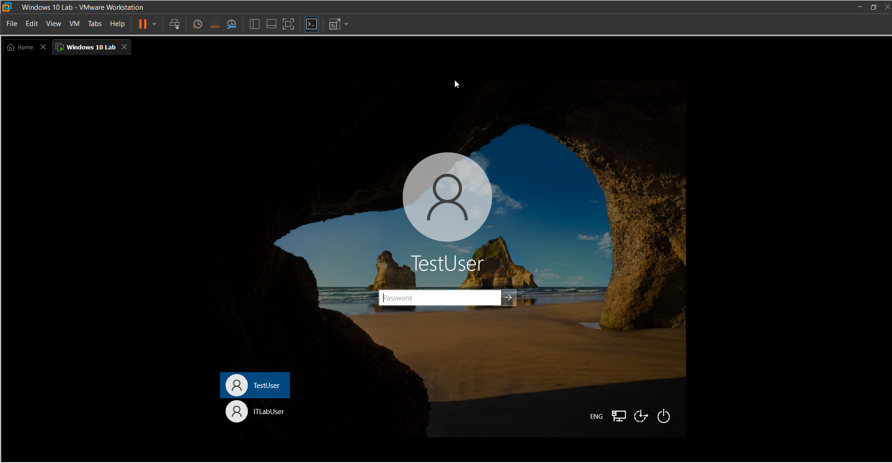
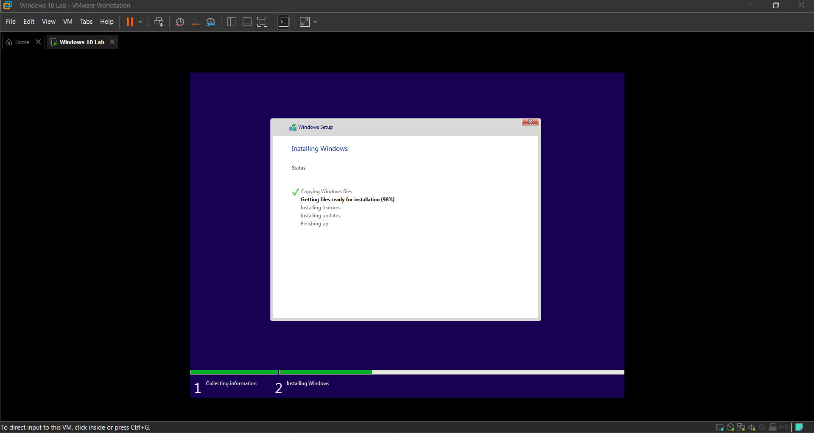
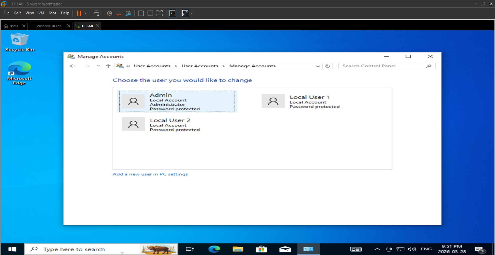
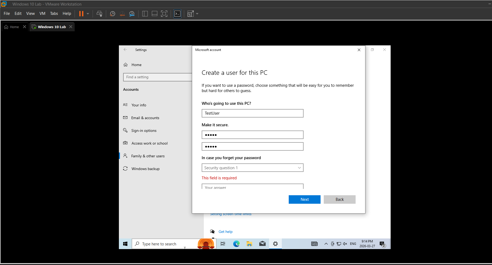
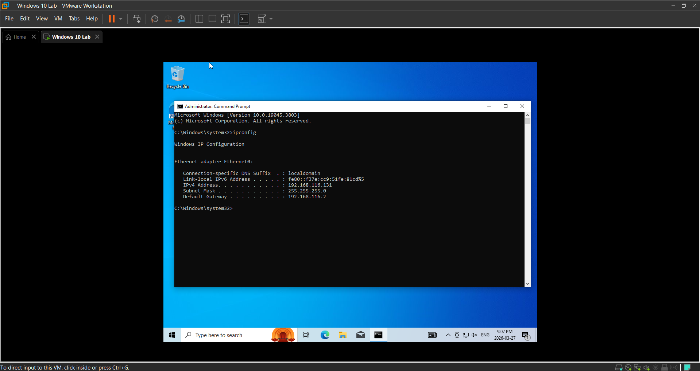
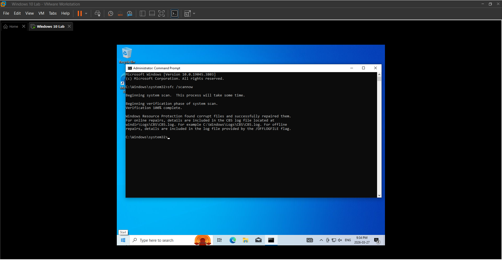

Overview

Built a Windows 10 virtual lab using VMware Workstation Pro to develop hands-on IT Support and Help Desk skills in a safe testing environment. The lab was used to practice system configuration, user management, networking, and troubleshooting tasks commonly performed by IT Support professionals.
Technologies Used
- VMware Workstation Pro
- Windows 10
- Command Prompt
- Networking Utilities
Tasks Completed
Installed Windows 10 in a Virtual Machine

Configured Local User Accounts

Created Additional User Profiles

Used ipconfig to Examine IP Configuration

- Verified network connectivity
- Used
pingto test connectivity
Performed Basic Troubleshooting and System Setup Tasks

Skills Demonstrated
- Windows Administration
- User Account Management
- Network Troubleshooting
- Virtualization
- IT Support Fundamentals
- Help Desk Procedures
Outcome
Successfully created and configured a functional Windows 10 lab environment and gained practical experience with common IT support tasks and troubleshooting techniques.